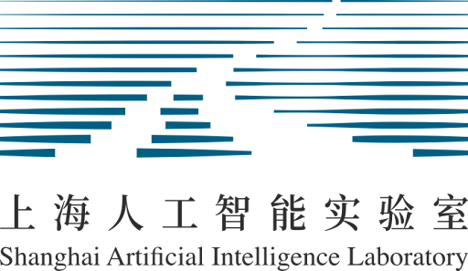
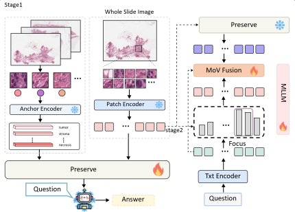
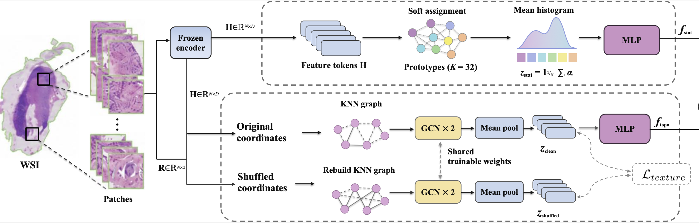
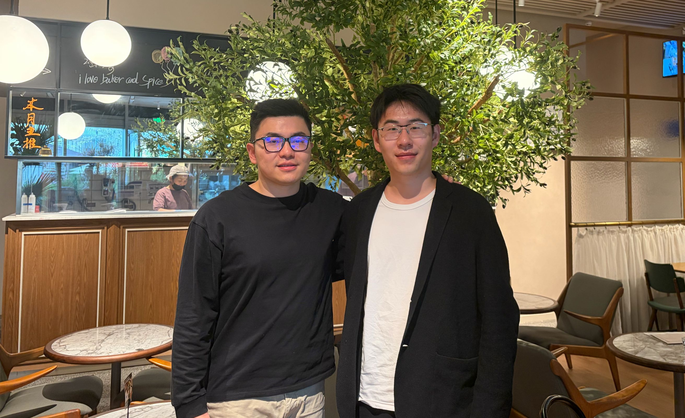
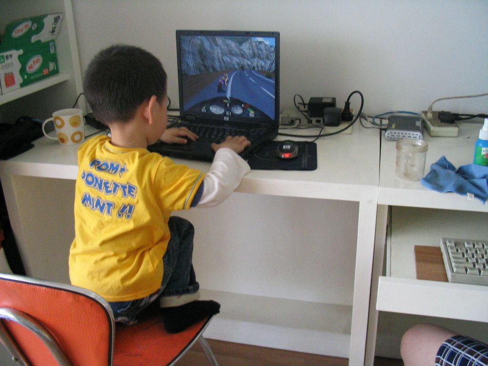
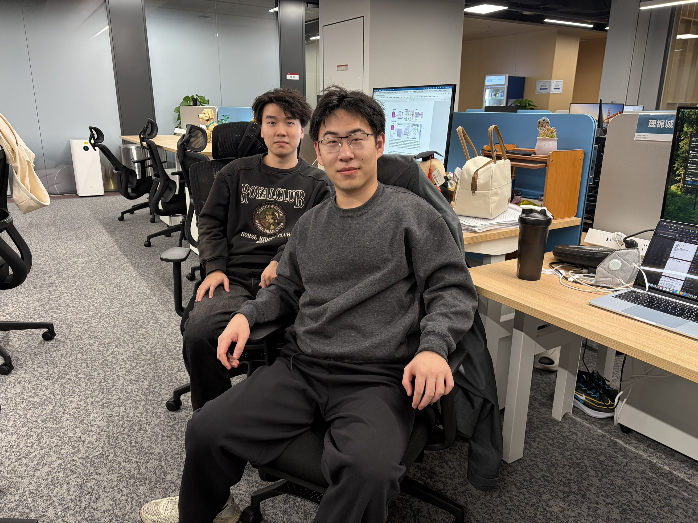

|
Jincheng Li 理锦诚AI for Medicine, Medicine for Humanity.Affiliation: Shanghai Artificial Intelligence Laboratory, Shanghai, ChinaCurrent Address: L1 Chuanmei Road, Shanghai, China Email: 2330110412@stmail.ntu.edu.cn Orcid • Scholar • GitHub |
Biography
- Introduction
- Education
-
University of Science and Technology of China, China Sep. 2027 – Jun. 2030M.E. Degree
- Supervised by S. Kevin Zhou , Fellow of IEEE MICCAI AIMBE IAMBE NAI. -
- Experience
-
-

Shanghai Artificial Intelligence Laboratory, China Aug. 2026 – Nov. 2026Research Intern
- Supervised by Rongzhao Zhang . -
 MIRACLE Laboratory , China Sep. 2026 – Jun. 2030Student Member
MIRACLE Laboratory , China Sep. 2026 – Jun. 2030Student Member
- Supervised by S. Kevin Zhou , Fellow of IEEE MICCAI AIMBE IAMBE NAI.
-
I was born and raised in Nanjing, China. Currently, I am a incoming master student at USTC, China, and a member of the Medical Imaging, Robotics, Analytic Computing & Learning (MIRACLE) Lab.
I am fortunate to be supervised by Professor S. Kevin Zhou, Fellow of IEEE MICCAI AIMBE IAMBE NAI.
Now, I am a Research Intern at Ant Group, building foundation models for biomedicine, under the mentorship of Dr. yuanfeng Ji.
Before joining Ant Group, I worked as a research intern at Shanghai Artificial Intelligence Laboratory, working on medical agents in the Medical Foundation Model Evaluation Group under the mentorship of Dr. Rongzhao Zhang.
I’m currently focused on
Medical AI, Agentic AI and Auto Discovery Systems.
I welcome conversations about medical AI, research collaborations, and open-source projects. The best way to reach me is 2330110412@stmail.ntu.edu.com.
News
Representative Publications
-
* indicates corresponding authorship and † indicates equal contribution.
Computational Pathology
|
 |
Xiangyu Li†, Jincheng Li†, Tianle Du,
Yanheng Li, Haoxuan Che, Yuxin Sun, Long Bai Liangliang Liu and Ran Su* Look Beyond the Question: Preserve-Focus-Fuse for Whole-slide Image Question Answering. arXiv. [Paper] |
|
 |
Xiangyu Li†, Jincheng Li†, Xing Xie,
Bin Guan, Shaohua Kevin Zhou, Rui Yan and Ran Su* Mitigating Spatial Blindness in Multiple Instance Learning for Whole-Slide Image Analysis. arXiv. [Paper] |

|
Jincheng Li†, Yuzhi He†, Yihui Zhan,
Minye Shao, Yifei Sun, Zelin Liu, Lichi Zhang and Lili Zhao* Two-stage Cross-domain Cervical Abnormality Screening with Cytopathological Image Synthesis and Knowledge Distillation. MICCAI 2026. [Paper] [Page] [Code] |

|
Jincheng Li, Danyang Dong, Menglin Zheng, Jinbo Zhang,
Lichi Zhang, and Lili Zhao* High-precision Mixed Feature Fusion Network using Hypergraph Computation for Cell Detection. MICCAI 2025 [Paper] [Code] |
Multimodal Learning

|
Yihui Zhan, Jincheng Li, Yuanyuan shen, and Xing xie* Spectral-Spatial Synergistic Learning and Context-Aware Edge Enhancement for Efficient Oriented Object Detection in SAR Images. IEEE JSTAR [Code] |

|
Lingyao Kong, Licheng Ao, Yuxuan Li, Jincheng Li, Xichen Yan,
Shenghao Zhu, Ruipeng Zhang, Zhangtianyi Chen, Zhihong Zhu, and Zixuan Huang* Domain-Consistent Attention with Decorrelation for EEG Emotion Recognition via Multi-Source Domain Adaptation. IEEE BIBM [Code] |
Awards and Honors
- [2025.12] • "RuiHua" NTU Top 10 Outstanding Student Award (CNY 10,000.00)
- [2025.07] • China International College Students' Innovation Competition (Provincial Gold Medal)
- [2025.04] • RoboMaster College Students' Robotic Competition (National Bronze Medal)
- [2024.08] • Chinese College Students' Electric Competition (Provincial Sliver Medal)
- [2025.07] • Chinese College Students' Computer Design Competition (National Sliver Medal)
Academic Communities
- Student Member
- MICCAI 2025~
- CAAI 2026~
- Conference Review
- MICCAI 2026
- PRCV 2026
- Journal Review
- ESWA/EAAI/JoSC
Academic Activities
- 7-9 May 2026: VALSE 2026, Wuhan, China (Attend)
- 23-27 September 2025: MICCAI 2025, Daejeon, Korea (Poster)
- 13 September 2025: MICS, Online (Oral)
Moments



Acknowledgement:
This page is based on
this template
by
Zehui Liao